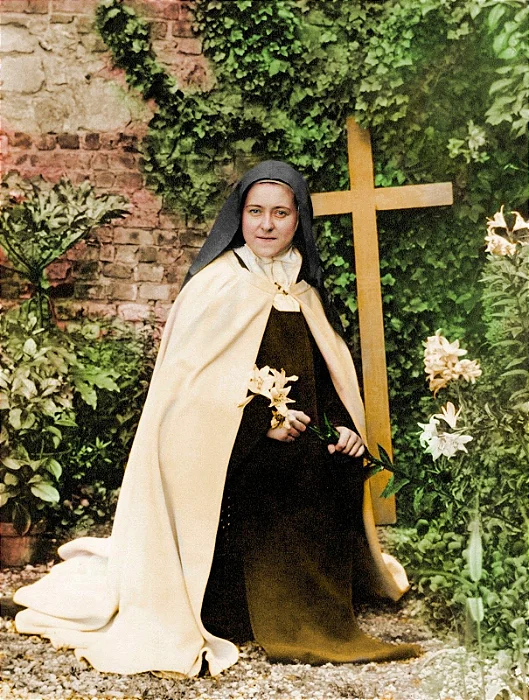

Santa Teresinha do Menino Jesus e da Sagrada Face foi uma jovem carmelita com alma de missionária que desejava ardentemente viver e morrer por Cristo. Ela viveu na França entre os anos de 1873 e 1897, tendo morrido precocemente com apenas 24 anos, por conta de uma tuberculose. A alma de Teresinha ardia por Jesus, ela oferecia todas as suas ações a Ele, mesmo as mais insignificantes, e deixou para nós um legado: a sua espiritualidade que se resume à infância espiritual, pela qual ela nos ensina a construir um caminho de intimidade com Nosso Senhor.
A pequena via, também chamada “infância espiritual” era a espiritualidade que Santa Teresinha vivia e defendia como forma de alcançar a verdadeira santidade. Basicamente, trata-se de reconhecer-se pequeno e frágil diante de Deus e permitir que Ele guie e engrandeça as nossas ações. Isso se dá através da nossa entrega total e constante a Ele, nos detalhes do nosso cotidiano. A Pequena Via é um caminho de humildade, sacrifício e amor.
Santa Teresinha nos faz perceber o quanto é grandioso para Deus o oferecimento das nossas simples ações cotidianas que parecem insignificantes e até mesmo chatas. Se forem feitas com amor e dedicação, tais ações tornam-se flores no jardim de Cristo. Em sua autobiografia, Teresinha escreve: “Há somente uma coisa a ser feita: oferecer a Jesus as flores dos pequenos sacrifícios”.
A “A História de uma Alma” é a grande obra autobiográfica de Santa Teresinha, que fez com que ela e toda a sua família ficassem conhecidos no mundo todo. Nesta obra, ela descreve toda a sua vida, seus sofrimentos e o período que viveu como religiosa. Além disso, demonstra de modo resumido a pequena via, por meio da qual ela crê que as almas podem alcançar a verdadeira santidade ao entregar-se a Deus nos pequenos detalhes.
Teresinha também escreveu cartas. Através delas, comunicava aos seus correspondentes aspectos práticos da sua vivência da pequena via. Por meio dessas cartas, ela abriu o seu coração e não escondeu nada. Elas são um perfeito complemento para a autobiografia de Teresinha.
Algumas irmãs, vendo o dom da escrita que Santa Teresinha possuía, passaram a solicitar que ela escrevesse poemas (e ela compôs mais de sessenta poemas), cujos temas eram relacionados a festas litúrgicas, vida espiritual e outros.
Em 1923, ela foi beatificada e em 1925 ,foi canonizada pelo Papa Pio XI. Também foi declarada padroeira das missões, tal como era o desejo de seu coração. Por fim, o Papa João Paulo II a proclamou como Doutora da Igreja em 1997.
Santa Teresinha fez brotar o amor nos corações de pessoas do mundo todo, que buscam e alcançam inúmeras graças através da devoção a ela. Antes de morrer, Santa Teresinha disse que “Depois da minha morte, farei cair do Céu uma chuva de rosas ”, e muitos devotos que rezam a Novena das Rosas de todo o coração, recebem a promessa de Teresinha: as graças cujas rosas simbolizam.